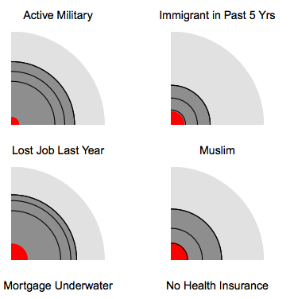

We are collecting and analyzing survey data asking people about the political attitudes and other characteristics of their family, friends, and others in their social circles. Some of this work is described here: http://www.stat.columbia.edu/~gelman/research/unpublished/penumbra_paper_11_clean.pdf and we are also doing polling relevant to the 2018 midterm elections.
Faculty Advisor Professor Andrew Gelman. Department/School: Statistics and Political Science/A&S. Location: 1255 Amsterdam. Project timeline Start date: 05/15/2018. End date: 08/31/2018.
